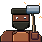
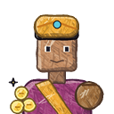

All Pale Blue Dot mockups (the tracker)
Who lives in the towns, what they do with their day, and how you talk, trade and fall out with them. The square below runs a whole day on world time, which only moves while the game is played. It is 22:30 and the lamps are lit. Click anyone to see who they are.
This extends openspec/changes/townsfolk, which builds people as the towns mockup has them (walkers, workers, idlers, a gate guard) and leaves schedules, talk and trade out of scope. Everything here past that is proposed. The square is the game's village template (assets/settlements/v1/village.json, copied byte for byte), built the way towns.html and the engine cut it: hex columns 2.833 m across and 1 m a layer with the terrain atlas's own tiles, walls on every outside edge per storey with its doors and windows, gable and cone roofs, the game's trees (planet_surface.wgsl). Walls and roofs are the game's settlement textures, sampled nearest at the manifest's scale. Mockup-only: the stalls, well, brazier, forge, kiosk and the four lamp posts round the green (cut from the game's materials; the kiosk's metal panel is drawn), and the townsfolk, since version 10 the friendly block-headed figure of the Faces tab that the game draws (townsfolk design 13a, 21 and 36), dressed for their roles from their people's palette. The portraits (48 px) and icons (16 px) are pixel art drawn in code with the balatro-pixel-art kit, the solitaire collection's style (tools/art/npcs_art.py), shown at whole-number scales with no smoothing; the kiosk's metal panel is a 32 px tile from the same kit.

Lit at night as CLAUDE.md asks: each lantern, lit window, the brazier and the forge lights what is near it, wherever the camera is, with towns.html's falloff (1 - (d/R)^2)^2, so each lamp throws a pool on the ground as the game's do. The moon is held at 0.035, as dark as the game's night, so the ground between the pools reads near black. The light is worked out per pixel, so the people who move are lit by the same lights as the walls. The clock runs a game hour every three seconds here so a day fits in a minute and a bit.
Only Tenebris and Sequoia have air. The game-design catalogue already keeps life to its own planet, and people follow the same rule: a people belongs to a biome's settlements and takes its clothes and colours from that biome's materials, as the towns take their kits. Airless bodies have no natives at all.
A role decides where a person works, what they carry, what they will do for you, and their day. A town draws its roles from its template: a harbour has fishers, a cliff village has miners, every walled town has guards on its gates.
Each role has a day; each person shifts it by up to half an hour from their seed so a town does not move in lockstep. World time passes only while the world is played (owner, 2026-09-27). Quit at 22:30 and come back a week later and it is still 22:30, the smith still at the inn. Nothing is simulated while the game is closed, so nothing needs catching up.
| Role | 00040812162024 |
|---|
A schedule is a law, not a record: where a person is at 14:00 follows from the seed and the clock, so it is never saved (world-persistence: what the rules decide is derived). What is saved is what you did to them: standing, quests, a debt, a theft. Those are stored records authored by the player.
E on a person opens talk, as E opens a door today. Talk is short: a line, three or four answers, and the doors it opens (trade, a job, a rumour). Mouse look stops while the panel is up; the world clock does not.
The north gate's hinges have rusted through. Orrin needs iron ore from the hills east of town before the guard captain loses patience.
A job names a real place and a real thing to dig or carry, as station contracts do in game-design section 13. The hours come from the giver's schedule: he is not at the forge at midnight.
Standing is per person and per town. It rises with trade, jobs and kindness, and falls with theft and with a house of theirs you take apart (the owner's P2 and T5: "you can steal from people lol, but there will be consequences").

Buy on the left, sell on the right. Prices are stable enough to plan a trip (game-design 13). Mood shifts them a little: standing above 60 takes 10% off.
| Thing | Where it comes from | Saved? | Change |
|---|---|---|---|
| Who lives in a town | The settlement template's roles, rolled with the seed. A home is a house in the layout; a post is a stall, a forge, a gate. | No, derived | townsfolk |
| Where they are now | The schedule at the world clock's hour, walked along the town's own streets. | No, derived | proposed here |
| What they look like | The people's palette, the role's piece, the seed. | No, derived | townsfolk |
| Your standing, a job in progress, a debt | What you did. Authored by the player, on the durable path. | Yes, a record | proposed here, on world-persistence |
| A person who left or died | A town process, later. It yields to the player: it never removes someone you are mid-job with. | Yes, a record | later (owner: no population systems yet) |
| Their house, taken apart by you | A player edit. They are homeless and upset; they do not rebuild over your edit. | Yes, the edit | player-building |
Solid and lit as townsfolk has it: a 0.28 m circle from the feet to 1.9 m that the walker slides round, and the light field sampled at the body's corners. At night the square keeps a few people out: the night guard, the innkeeper's last customers, the smuggler. Most are home, and their windows are the lit ones.
Everyone here is one kind of person, split into peoples by world and biome. The alternative is a second species on Sequoia (the catalogue's Shellkin and Crane are animals today).
Recommendation: one species, peoples by biome. It keeps one figure rig, and the difference is in the clothes and palette you can see in section 4.
townsfolk puts schedules out of scope. Without them the night square is as busy as noon.
Recommendation: a follow-on change, townsfolk-days, right after townsfolk: sleep, work, inn, patrol. It is derived from the clock and needs no save format.
Short exchanges (a line and three or four answers) or branching conversations.
Recommendation: short exchanges with a role's stock lines plus one line about what the town knows (a rumour, a job). Branching trees cost writing time the roadmap does not have yet.
Section 6 shows both.
Recommendation: both, with the town's the mean of its people's. Theft from one person drops theirs a lot and the town's a little.
The square has a starport kiosk clerk and a smuggler by the well.
Recommendation: clerks and smugglers mostly on stations and outposts, with one kiosk in towns that have a landing clearing.
Smaller figures playing in the square by day.
Recommendation: later, once standing and theft consequences exist, so nothing awkward can be done to them first.
Since version 10 every figure on this page is the friendly townsperson of the Faces tab, the one the game draws (townsfolk design 13a, 21 and 36): a bevelled block head 0.5 m wide, 0.6 m tall and 0.45 m deep on a short six-sided body, flat shaded, two tones a material, no outlines. It replaces the hexagonal-prism figures of version 9 and before. Every figure is rolled from the settlement's seed and the person's index, as the game's look::generate rolls it, so a town's people are the same on every visit and every machine. Roll another town to see the spread; Turn turns them, off by default.
The lineup is a studio shot with its own light, so it has no night; the square at night and the Faces tab's Night show these figures by their lamps.
The friendly townsperson of townsfolk design 13 to 18 and 13a, the figure the game draws since version 9 was approved for it ("People approved. Build.phase 3", 2026-11-21). Since version 10 it is the only figure on the page: the square and the Character sheets wear it too, and the hexagonal-prism figure that stood beside it here as "today" is gone, since that is no longer the game's look.
An expression is a named set of layer values: eye scale, pupil size, lid height, brow lift and tilt, mouth cell and blush (design 15). Separate layers run on their own, because they are the person, not the camera: blinks every 2 to 6 s, sometimes double, closing in about 60 ms and opening in about 120 ms; gaze saccades of about 50 ms held 0.5 to 2 s, to the cursor when it is near a face, otherwise to points around or to you; the head follows the eyes late; lids drop when the eyes look down; Talk cycles the mouth cells. Each toggle turns its layer off.
Play walk sends the proposed figure on a bouncy walk round the patch (a bob and squash a step, arms swinging), off by default; it walks home when stopped. Wave, Hop, Shrug and Tilt are keyed poses blended by curves (design 17); Delighted hops. The crowd is generated from the seed (design 16): height, build (round, pear, tall, stout), head size, eye size and spacing, nose (none, button, long), hair (bun, crop, braid, bald, hat), beard, skin and clothes from the fields people's palette. The same seed gives the same people.
At night the patch is lit only by its two lamp posts, a lit window and a brazier, each lighting what is near it wherever the camera is, with the towns mockup's falloff (1 - (d/R)^2)^2; the moon is held at 0.035 so the lamps read. Nothing turns on its own: the camera stays where you leave it (drag to orbit, wheel or pinch to zoom, right drag to pan; in first person, drag to look and WASD to walk).